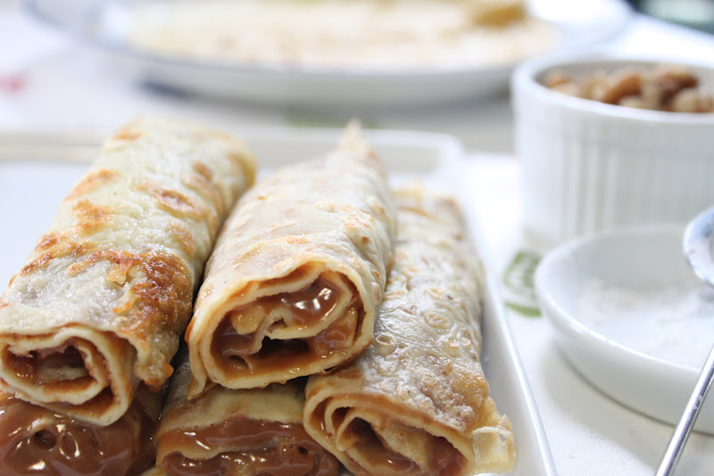

Panqueques

Ingredientes
- 250ml de leche entera
- 135g de harina de trigo o harina floja de repostería
- 2 huevos medianos
- Manteca o 50ml de aceite
- Miel o dulce de leche para acompañar
Prepraracion
- Colocamos en un bowl o recipiente la harina y añade el huevo y la leche.Asegúrate de mezclar bien los ingredientes hasta que no queden casi grumos.Una vez tengas la masa lista, dejamos reposar la mezcla en la nevera o heladera por una media hora aproximadamente para que la harina se hidrate.
- Aunque esta parte del reposo es opcional.También se podria hacer directamente.
- Calentamos una sartén antiadherente en el fuego a potencia media baja con un poco de aceite o manteca.Cuando esté caliente, echa una cucharada de la mezcla y espera que se cuaje la masa.
- Cuando la superficie de los panqueques comience a verse ligeramente cuajada,volteamos con ayuda de una lengua de silicona o una espátula.
- Vamos poco a poco haciendo panqueque por panqueque con paciencia, enmantecando cada tanto el fondo del sartén para dar sabor y evitar que se peguen a la superficie.Hay que tener cuidado de que no se caliente demasiado la sartén o panquequera y no hay que intentar despegarlos pues se van a despegar ellos solos.
- Cocemos por el otro lado durante un minuto antes de retirar a un plato.Rellenamos con dulce de leche y estan listos para comer.
Volver al inicio